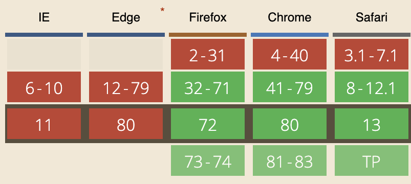

mix-blend-mode is a CSS property that defines how an element's content should blend with its background
It has 16 keywords available to use that direct how the element will blend - ANY element, including SVGs - and removes the need for photoshop. Text remains accessible to screen readers!
We can take advantage of mix-blend-mode's difference keyword which subtracts the darker of 2 colours from the lighter (think in rgb values!).
Simply throw up a full-screen fixed div with background: white (or a light hue of any colour) and mix-blend-mode: difference and the magic happens
✨✨✨
To make sure your assets (i.e. logos) don't get affected, simply add the CSS property isolation: isolate on those elements.